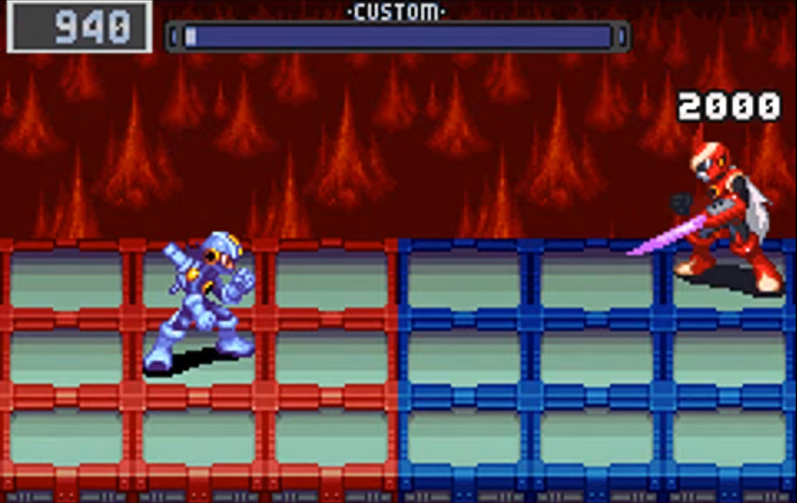
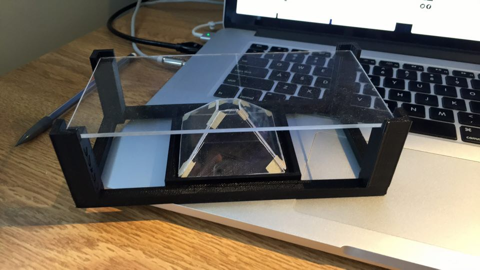
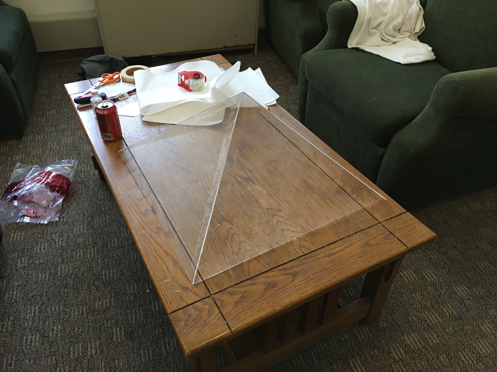
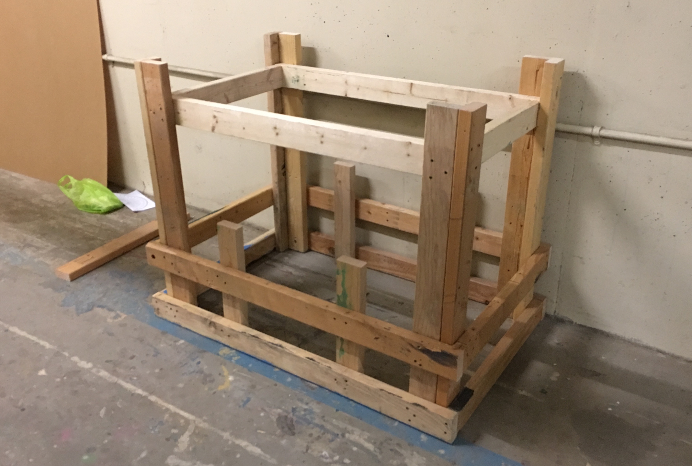
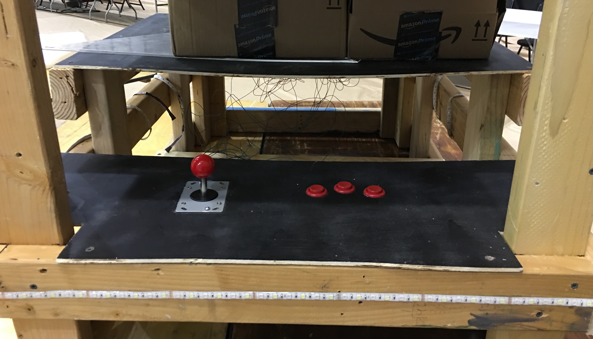
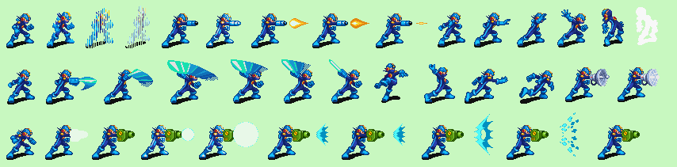

Mega Man Arcade Table
Motivation
Growing up, I loved watching TV shows like Pokémon and Yu-Gi-Oh!, but what I loved even more was playing the games. I've logged hundred's of hours on games like Mega Man Battle Network over the years, but one of my biggest complaints was that the experience was so different than the TV shows. I wanted to have my own Mega Man Net Navi and be able to battle with my friends anywhere, but because of technology, I was limited to playing by myself on a small GameBoy Advanced screen.

Screenshot from Mega Man Battle Network for the GameBoy Advanced. One of my favorite childhood games.
The goal of this project was to create a gaming experience that more closely resembled the games on the TV shows I loved as a child. When I first saw videos of "smartphone holograms" on YouTube, I began imagining the possiblities of applying the technology to everything from movies and video conferencing to, of course, games.
The idea was to build a large, holographic arcade table where players could battle their personal Mega Man Net Navis against each other using traditional arcade controllers with a 3D view. Players would have a partner smartphone app where they could manage their Net Navi, edit their battle chips, and customize the apperance of their character. To battle each other, players would simply "jack-in" using the NFC chips on their phones and their character would show appear in the pyramid to battle. I worked with a team of 4 to make this dream into a reality at Build18 2016 hosted at my school, Carnegie Mellon University.
Development
I started off by modeling and 3D-printing a mini holographic pyramid stand for my iPhone to see how well these "holograms" actually looked. They looked cool, but it was pretty clear that the "hologram" was just a reflection and its position in 3D-space changed with your perspective. This meant trying to interface the hologram with a physical playing field wasn't going to work, but by projecting the playing field with the characters this problem could be avoided.

3D-hologram projector for smartphones designed by me in AutoDesk Inventor. I'll post a Thingiverse link soon!
Next, I built a large-scale pyramid out of acrylic sheets. The only requirement for these pyramids is that the surfaces form a 45 degree angle with the projecting screen, which equates to iscoeles triangles with two 54 degree angles. The big downside of these pryamids is that the actual viewing area is small compared to the projector you use with it. We were able to get our hands on a 46" TV from a friend of ours, which gave us about a 26" x 26" square base for our pyramid and a height of 13". We ordered 3/64" thick sheets of acrylic from McMaster-Carr and made the cuts by scoring then snapping the sheets. I tried to use apply a glue that would actually melt the acrylic sheets and meld them together, but struggeled to hold the sheets together and opted for packaging tape instead. The tape actually did a good job and helped make the screen more reflective.

26" x 26" x 13" holographic pyramid built from 3/64" acrylic sheets in my dorm room.
The arcade table itself was actually one of the bigger challenges of this project since I knew nothing about woodworking. I Google'd some basics about building with two-by-four's and managed to design a frame that was strong enough to hold up the TV and accomodate the pyramid on an elevated platform along with two sets of arcade controls.

The wooden frame for the arcade table.
Once the frame and pyramid were built, it was time to test it out. We found this video of Hatsune Miku on YouTube, played it on the TV from a laptop, and boom: hologram! It actually looked like a hologram and is way more impressive at this scale than it was on my phone. I'm pretty sure this is how they project her hologram during concerts and I think it may be the same technique used for the 2Pac hologram at Coachella. There's definitely potential for a new entertainment experience revolving around these things somewhere between VR and traditional videos.
For controls, we ordered traditional arcade controllers from SparkFun and wired them to an Arduino Due. Using the Keyboard library, I was able to map input from the controls to keystrokes and by simply plugging the Due into our computer, it could be used as a USB keyboard.

Arcade controllers hooked up to an Arduino Due.
The last part was the actual game engine, which was written in PyGame since we were aiming to run it on a Raspberry Pi. The trick was to have PyGame control 4 different views that represented the 4 different sides of the pyramid. For the images of the Net Navis, we used sprites from GameBoy game and a designer on our team modfied them to support all 4 viewing angles since originally only a side view was supported.

Sprite sheet used for the game containing sprites pulled from the GBA game.
We were able to build this project from scratch over the course of a week and brought it all together to demo at Build18. Check out this video from the event.
What's next?
For this project, our team was able to prove that we could build a 3D holographic arcade table, which opens up a lot of opportunities for 3D gaming.One of the biggest challenges we faced was working within the limitations of PyGame. To improve on this project, we plan on running our game on a more powerful computer and rewriting it in Unity. For the demo, our game only supported three types of attacks and a simplified battle system, but when rewriting it, I hope to implement a more sophisticated battle system including a Tetris-Battle like chip system where players would be presented with a stream of their battle chips in random order and can either use them or queue them for later use. This would allow for a familiar and fast-pace game experience. I'm excited to start working ont this soon, as it be my first big game development project!
I would also like to develop a partner iOS app that would allow players to manage their personal MegaMan characters to battle others with. Unfortunately, Apple only allows the NFC chip to be used for ApplePay, so I'd need to find an alternative way to quick "jack-in" with your player. One solution would be to scan a QR code on your phone, which is definitely doable and is close to the experience of wireless connecting for battle like they do in the actual game. I think it be cool to also implement a version of the actual battling for iOS since the arcade table wouldn't always be available to players.
The great thing about this project is that the view is completely reusable, and I plan on making other games with it. I'll have a blogpost out soon about my idea for a Yu-Gi-Oh! card game arena that uses computer vision and voice commands to create a battling experience that is almost identical to the TV show!
Technology Used
- Arduino Due
- Pygame